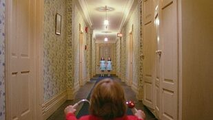
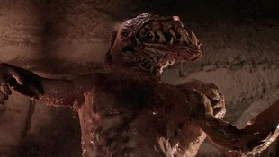
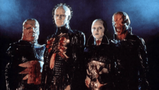

Riding the wave of the late 1970s' gritty realism and the birth of the slasher, the 1980s fully embraced its dark side, becoming a golden age for franchise horror, iconic villains, and groundbreaking practical special effects. Home video boomed, giving these films unprecedented reach and cult status, while audiences craved ever more inventive scares and memorable monsters.
The 1980s was undeniably dominated by the slasher subgenre, with masked killers like Jason Voorhees and Freddy Krueger becoming pop culture icons. This era also celebrated the artistry of practical effects, with makeup artists and effects crews pushing the boundaries of gore and creature design to new, often shocking, heights. Beyond slashers, psychological horror continued to evolve, and body horror reached new, visceral levels, solidifying the decade's reputation for unforgettable and often controversial horror imagery.
Stanley Kubrick’s atmospheric adaptation of Stephen King’s novel is a masterclass in psychological horror. Jack Nicholson's descent into madness as Jack Torrance, amplified by the Overlook Hotel's haunting presence and unsettling cinematography, created a slow-burning dread that differed from typical slasher fare. It showcased how horror could be deeply artistic and ambiguous, inviting endless interpretation and cementing its place as a cerebral, yet terrifying, evolution of the haunted house story.
John Carpenter’s sci-fi horror masterpiece, a remake of the 1950s classic, terrified audiences with its themes of paranoia and isolation, but it was Rob Bottin's groundbreaking and grotesque practical creature effects that truly seared it into memory. The shape-shifting alien offered a new kind of unknowable threat, pushing body horror to its limits and influencing countless creature designs and effects artists for decades to follow.
Wes Craven ingeniously tapped into the universal vulnerability of sleep, introducing Freddy Krueger, a wisecracking, supernaturally powered killer who stalked victims in their dreams. This surreal premise allowed for wildly imaginative and often bizarre death sequences, setting it apart from more grounded slashers. Freddy's unique persona and bladed glove made him an instant horror icon, highlighting the genre's shift towards villains with distinct personalities.

Clive Barker’s directorial debut, based on his own novella, introduced the Cenobites – otherworldly beings who explored the terrifying nexus of pain and pleasure. Pinhead, their leader, became another iconic 80s horror figure. "Hellraiser" brought a more mature, sadomasochistic, and philosophical dimension to body horror, delving into forbidden desires and a darker, more artistic form of grotesquerie that expanded the genre's thematic palette.
The 1980s solidified horror's place in mainstream pop culture, largely through its unforgettable slasher villains and the spectacle of its practical effects. While sometimes criticized for excess, the decade also produced sophisticated psychological thrillers and pushed creative boundaries, leaving a legacy of iconic characters and franchises that continue to influence horror today, setting the stage for a more self-aware and deconstructive phase in the 1990s.
| Nombre | ID | Carrera | Correo |
|---|---|---|---|
| Maria Jose Arévalo | 1094044725 | Jurisprudencia | mariaj.arevalo@urosario.edu.co |
| Daniela Cortes Rodriguez | 1095550727 | Jurisprudencia | daniela.cortesro@urosario.edu.co |